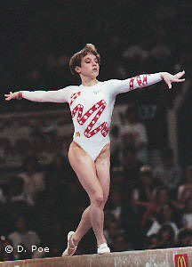

Kerri Strug (USA)
1996 American Cup AA Champion
1996 Olympic Team Gold Medalist

Medal Total
Olympic Games: 1
Gold, 1 Bronze
World Championships: 2 Silver, 1 Bronze
Kerri was born on November 19, 1977, in Tucson.
Competition Results
1989
Intl. Junior Invitational (children's division): 1st AA
Jr. American Classic "B" (children's division): 1st AA
1990
Dutch Open: 3rd AA
Jr. American Classic: 1st AA
Jr. Pan American Games: 1st AA
Jr. US Championships: 4th AA
1991
Alamo Invitational: 4th AA
Jr. Buckeye Classic: 1st AA
US Championships: 3rd AA, 1st V, 3rd UB, 4th B, 5th FX
USA-ROM Dual Meet: 8th AA
World Championships: 2nd Team
1992
Alamo Invitational: 3rd AA
Intl. Mixed Pairs: 12th Team
Olympic Games: 3rd Team, 14th AA (prelims)
US Championships: 2nd AA, 1st V, 1st B, 2nd FX, 4th UB
US Olympic Trials: 3rd AA
World Championships: 6th V, 7th UB
1993
American Classic: 1st AA
American Cup: 2nd AA
Gander Memorial: 4th AA
Intl. Mixed Pairs: 2nd Team
Swiss Cup: 10th Team
US Championships: 3rd AA, 2nd UB, 3rd FX, 4th V
US Olympic Festival: 2nd AA, 1st UB, 2nd B, 2nd FX
USA-BLR-UKR: 1st Team, 7th AA
World Championships: 5th AA (prelims), 5th V, 6th FX
1994
World Championships: 2nd Team
1995
US Championships: 5th AA, 3rd UB, 4th FX
US Olympic Festival: 1st AA, 1st UB, 3rd B
US World Trials: 4th AA
World Championships: 3rd Team, 7th AA
1996
American Cup: 1st AA, 1st B, 1st FX
Intl. Mixed Pairs: 4th Team
Olympic Games: 1st Team, 7th AA (prelims)
3-on-3 International: 4th Team
US Championships: 5th AA, 2nd V, 2nd FX
US Olympic Trials: 4th AA
This page was created on September
02, 2006.
© Gymn Forum